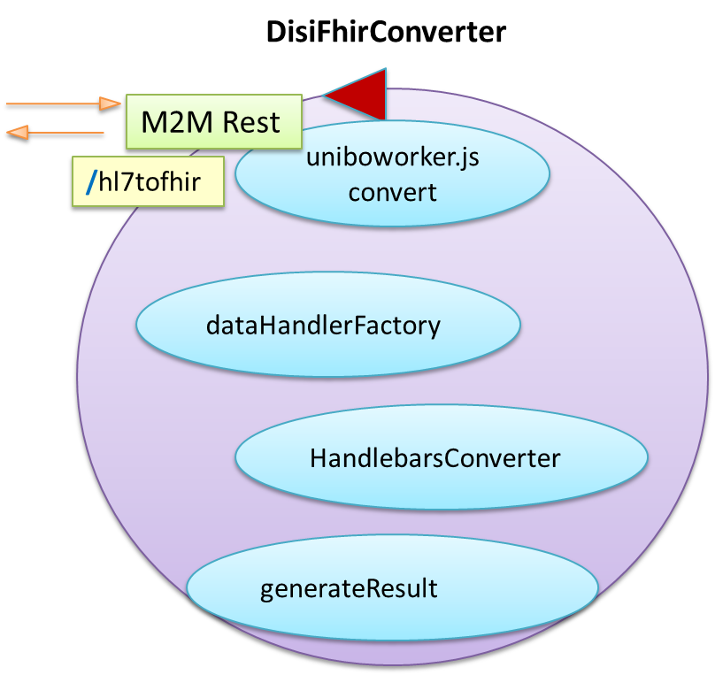

DISI HealthAdapter | HL7 to Fhir Conversion
References
Introduzione
Quest progetto (
natmaterial\DISIFhirHl7Converter) isola la parte di trasformazione del progetto
Microsoft FHIR-Converter
basato su Node.js.
L'intento e' fornire un servizio
REST alla porta
3000 con API POST
/hl7tofhir che accetta due parametri:
- templateb64: Una stringa codificata base64 che rapprsenta il template hbs di riferimento per la trasformazione
- hl7b64:Una stringa codificata base64 che rapprsenta il messaggio HL7 da trasformare
Il srvizio e' realizzato utilizzando Express e si articola in:

In natmaterial\DISIFhirHl7Converter:
docker build --tag disifhircvtimage . 90.8MB
docker run --name disifhircvt --rm -p3000:3000 disifhircvtimage
docker exec -it disifhircvt bash Per vedere l'interno
La logica della trasformazione
E' contenuta in da
uniboworker.js e si articola nelle seguenti fasi:
La trasformazione e' realizzata dai seguenti componenti:
- La casse hl7v2.js
e' una specializzazione di dataHandler.js
che funge da dataHandler fornendo operazioni quali:
parseHL7v2( msg ) //msg: dato HL7 |
restituisce un oggetto con campi
v2.meta contiene i nomi dei segmenti (MSH,EVN,PID,NK1,PV1,...) del dato
v2.data contiene i segmenti del dato
- La operazione GetHandlebarsInstance(dataTypeHandler, templatesMap)
definita in uniboworker.js, che restituisce una
HandlebarsConverter.instance che include il dataHandler.
-
handlebars-converter.js
funzione 'stored-fun'
handlebarsInstances[dataType].VM.resolvePartial
-
handlebars-helpers.js
La operazione
init di
uniboworker.js:
- Acquisisce (da un hl7Source file quale ADT01-23.hl7)
il dato HL7 da convertire e il template .hbs da usare
- Invoca la operazione convert(workData) con:
workData.srcDataType = "hl7v2";
workData.msg = dato HL7 letto da file
workData.templateString = templateString letta da file
- Crea una istanza hl7v2.js
(che specializza dataHandler.js )
e la include in una istanza handlebarInstance di HandlebarsConverter
- Usa handlebarInstance per compilare workData.templateString che restituisce un oggetto template
function ret(context, execOptions) {
if (!compiled) {
compiled = compileInput();
}
return compiled.call(this, context, execOptions);
}
- Invoca dataTypeHandler.parseSrcData(workData.msg) e, ottenuta la risposta, costruisce un oggetto dataContext
dataContext.msg.v2.meta nomi dei segmenti del dato
dataContext.msg.v2.data segmenti del dato
- Invoca la operazione generateResult( dataTypeHandler,dataContext, template ) che effettua la trasformazione
- Salva il risultato della trasformazione nel file workers\hl7Source.txt
La trasformazione
L'operazione
generateResult( dataTypeHandler,dataContext, template ):
- Invoca template(dataContext) e ottiene un oggetto resultcvt con molti campi.
In questa fase invoca l'operazione getFirstSegments di
handlebars-helpers.js
e poi esegue la funzione 'stored-fun' che viene chiamata 94 volte, registrando i templates inclusi nella directory
templates/hl7v2
- Invoca hl7v2.js .postProcessResult(resultcvt)
e ottiene un oggetto result con campi resourceType,type,entry:
result.resourceType = Bundle
result.type = transaction
result.entry.length = 5 //entry keys = fullUrl,resource,request
result.entry[0].resource keys: resourceType,id,identifier,name,birthDate,address,telecom,communication
result.entry[1].resource keys: resourceType,id,...
- L'operazione postProcessResult chiama
hl7v2.js.getConversionResultMetadata e
hl7v2.js.parseCoverageReport